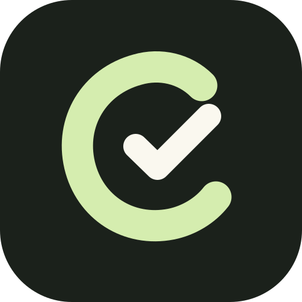

Unload first. Prioritize second.
Get the whole thing out. curdr keeps the original, separates obligations from ideas and helps choose a few next moves. The rest can wait on the shelf.
Capture ≠ commitment
curdrGet curdr ↗YOUR OPEN-SOURCE AI CO-FOUNDER
Too many ideas. Too many loose ends.
And only one of you.
Brain dump the messy version. Get an honest second opinion. Let your own Hermes help turn it into work you can actually finish.
A LITTLE MORE HEADSPACE
Your job isn’t to manage an AI. It’s to build something people need. curdr should make that easier.
Get the whole thing out. curdr keeps the original, separates obligations from ideas and helps choose a few next moves. The rest can wait on the shelf.
Capture ≠ commitmentGet the weak assumption, the trade-off and a cheap way to test it. A useful co-founder can say “I’d leave that for now” and explain why.
See real tool activity, open files, review a result and approve the specific action. Morning priorities and background checks run on your server, on your schedule.
No new finding? No new notification.CONTEXT THAT STAYS WITH YOU
Start with a short interview: what you’re building, where you are, what matters next and what it should never do. Keep facts inspectable and change them when your plans change.
Read the actual behavior skills ↗BUILT IN PUBLIC
One build, three short updates a day. Show the actual work, test it with solo founders, and let real problems decide what earns a place.
Help shape curdr ↗Less overwhelm, not a longer task list.
Reality checks, memory and boundaries.
Proactivity, real results and approvals.
iPhone setup, open source and founder tests.
GIVE IT TO YOUR HERMES
You already have an agent. Let it handle the setup. curdr adds the interface and co-founder workflow on the same server.
You need your own running Hermes, a server and model access. curdr is free software; hosting and model usage can cost money.
BEFORE YOU START
Yes, through the web app. Open your server’s HTTPS address in Safari, then choose Share → Add to Home Screen → Open as Web App. Microphone and camera need HTTPS and permission. Physical iPhone acceptance testing is still part of this early release; there is no signed native iOS app yet.
The gateway’s enabled routines can run while your server and Hermes remain online. Quiet hours and sleep mode still apply. Native push delivery is not implemented, so don’t rely on closed-app notifications for critical deadlines.
The curdr source is MIT licensed. You bring the server, Hermes and the model/tool providers. Those may have their own costs and terms. There is no curdr subscription.
Workspace data is stored by your curdr gateway in SQLite. Hermes keeps its own sessions and memory. Requests may reach the model and tools you configure. TencentDB is an optional future direction, not an active dependency. This product website has no analytics or account form.
It’s an early open-source release. Use it for scoped work you can verify, keep approvals intact and test your own host/device setup. It can help with the work. It can still be wrong.